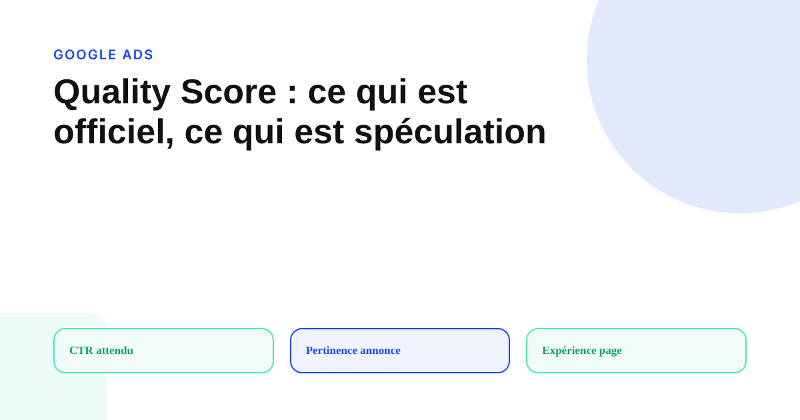
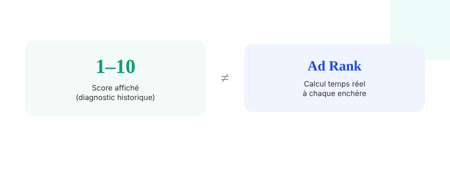

Quality Score Google Ads : ce qui est officiel, ce qui est spéculation
Tout le monde cite le Quality Score. Peu distinguent ce que Google documente réellement de ce qu'une agence a mesuré une fois sur un compte et généralisé depuis. La frontière entre les deux change concrètement ce qu'il faut regarder en priorité.

Peu de métriques Google Ads génèrent autant de règles maison que le Quality Score. Le problème n'est pas que ces règles soient fausses — certaines sont de bonnes heuristiques — mais qu'elles sont presque toujours présentées avec la même certitude que ce que Google documente officiellement, alors que les deux n'ont pas la même fiabilité.
Ce que Google documente, sans ambiguïté
Le Quality Score repose sur trois composants officiellement documentés : le CTR attendu (la probabilité estimée qu'une annonce soit cliquée par rapport aux autres annonceurs sur le même mot-clé), la pertinence de l'annonce (l'adéquation entre le mot-clé et le message de l'annonce) et l'expérience de la page de destination (la pertinence, la clarté et la facilité de navigation de la page vers laquelle pointe l'annonce). Chacun est noté Au-dessus de la moyenne, Moyen ou Au-dessous de la moyenne, relativement aux autres annonceurs sur ce même mot-clé — jamais dans l'absolu.
Ce que Google ne dit jamais : la pondération
Aucune publication officielle ne précise le poids relatif de ces trois composants dans le score final sur 10. Les affirmations qui circulent — « le CTR pèse pour 40 %, la pertinence pour 30 % » — proviennent de tests d'agences sur un échantillon de comptes, pas d'une documentation Google. Ce sont des hypothèses de travail qui peuvent orienter une priorisation, mais elles ne doivent jamais être présentées à un client comme un fait établi : Google ne les a confirmées à aucun moment.

Le piège le plus fréquent : confondre le score affiché et l'Ad Rank
Le chiffre sur 10 visible dans l'interface est un indicateur de diagnostic, recalculé périodiquement à partir d'un historique. Ce n'est pas ce chiffre qui détermine la position de l'annonce ni le coût par clic à l'instant de l'enchère : c'est l'Ad Rank, qui combine l'enchère, le contexte précis de la recherche et un calcul de qualité plus fin et en temps réel, distinct du score affiché. Un compte peut afficher un Quality Score moyen tout en obtenant un excellent Ad Rank sur une requête précise, et inversement : optimiser le chiffre affiché sans comprendre cette distinction revient à optimiser le mauvais indicateur.
Ce qui n'a pas changé avec l'essor des enchères automatisées
L'automatisation des enchères (Smart Bidding, Performance Max) ne rend pas le Quality Score obsolète : il reste un signal de diagnostic directement actionnable pour repérer une annonce mal alignée avec l'intention de recherche ou une page de destination qui déçoit après le clic. Ce que l'automatisation a changé, c'est le besoin d'optimiser manuellement les enchères elles-mêmes — pas le besoin de corriger ce que le Quality Score révèle en amont.
Comment trier le signal du bruit en pratique
Avant d'agir sur un Quality Score bas, distinguer trois niveaux de certitude : les composants eux-mêmes et leur note relative (officiel, fiable à 100 %), le diagnostic qu'ils permettent — une annonce peu pertinente ou une page lente pénalise probablement le score (déduction logique, fiable) — et la pondération exacte entre composants (spéculation d'agence, à ne jamais citer comme un fait Google). Corriger le composant noté « Au-dessous de la moyenne » reste la meilleure action disponible, que la pondération exacte soit connue ou non.
FAQ
Le Quality Score affiché à 10/10 garantit-il la meilleure position possible ?
Non. Le chiffre sur 10 est un indicateur de diagnostic historique, mis à jour périodiquement. L'Ad Rank, qui détermine réellement la position et le coût par clic à chaque enchère, repose sur un calcul de qualité en temps réel plus fin que ce score affiché, combiné aux enchères et au contexte de la recherche.
Quel est le composant du Quality Score le plus important ?
Google ne publie aucune pondération officielle entre le CTR attendu, la pertinence de l'annonce et l'expérience de la page de destination. Toute affirmation du type « le CTR compte pour 40 % » vient de tests d'agences, pas de Google — à traiter comme une hypothèse de travail, pas comme un fait établi.
L'essor des enchères automatisées a-t-il rendu le Quality Score inutile ?
Non, il reste un signal de diagnostic utile pour repérer une annonce ou une page de destination mal alignée avec la requête, même si l'optimisation des enchères elle-même est désormais largement automatisée. Un Quality Score bas reste un symptôme à corriger, pas une métrique à ignorer.
Envie d'un audit de la qualité réelle de vos campagnes Google Ads ?
Pour aller plus loin, voir la page SEA, et l'article Smart Bidding : ce qu'il faut vérifier avant de lui laisser le volant.
Pour continuer sur ce sujet.